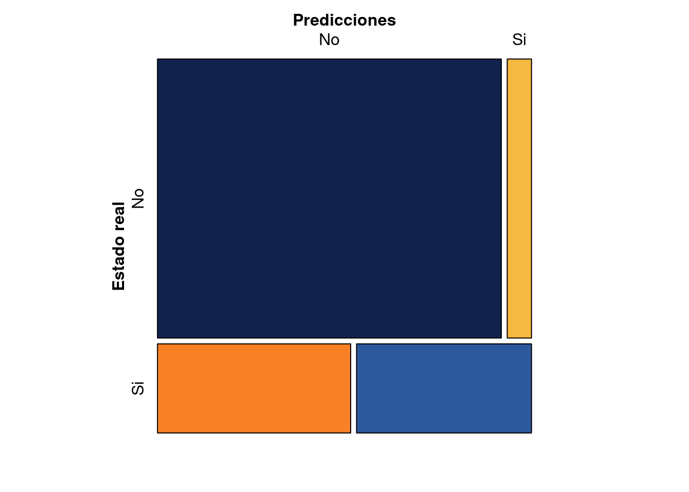

Para determinar la bondad de ajuste del modelo se utiliza el resultado de la probabilidad que estima el modelo y se asigna un valor de cero para los individuos que tengan valores menores o iguales a un punto \(c\), que en este caso tomamos como \(0.50\). Para valores mayores a \(0.5\) se asigna un valor de \(1\). Al construir una tabla con los resultados de la predicción contra los valores reales de \(Y\), obtenemos:
| predicción |
| | 0 | 1 |
--------|---------|---------|----------|
Estado | 0 | 140 | 11 |
real | 1 | 27 | 22 |
Representados por el siguiente gráfico de mosaico:
library(vcd)
predicciones <- ifelse(test = modelo1$fitted.values > 0.5, yes = 1, no = 0)
mc <- table(modelo1$model$matricula, predicciones,
dnn = c("Estado real", "Predicciones"))
mosaic(mc, shade = T, colorize = T,
gp = gpar(fill = matrix(c("#11224D", "#F98125", "#F5B841","#2C599D"), 2, 2)))
Los colores azules representan la proporción de clasificaciones correcta :
Los colores naranjas corresponden a las proporciones de clasificaciones erradas por el modelo.
La proporción de clasificaciones correctas dan una aproximación del valor \(R^2\)
\[ \dfrac{140+22}{140+27+11+22} = \dfrac{162}{200} = 0.81 \] Este valor cuenta como el \(R^2\) , es decir que el modelo explica (clasifica de manera adecuada) el 81% de los casos
Este valor se puede obtener de la matriz de confusión
library(paqueteMOD)
data("matricular")
modelo1= glm(matricula ~ matematicas, data=matricular, family = "binomial")
# summary(modelo1)
matricula.fit = as.numeric(modelo1$fitted.values>0.5) # clasificacion de las estimaciones en 0,1
data1= data.frame(matricular$matricula, matricula.fit)
matrizC=table(data1)
matrizC # matriz de confusión
| predicción |
| | 0 | 1 |
--------|---------|---------|----------|
Estado | 0 | 140 | 11 |
real | 1 | 27 | 22 |
A partir de la matriz de confusión se obtienen indicadores
En una de las características más importantes del modelo, pues permite valorar a través de la matriz de confusión las clasificaciones correctas por medio de las predicciones del modelo.
Existen adicionamente otros indicadores que pueden ser utilizados como es el estadistico c asociado a la curva ROC (Trvrivrt Oprtsyong Charasteristic) . Esta curva compara diferentes puntos de corte de la probabilidad que permite establecer la tasa de clasificaciones correcta de verdaderos positivos y de falsos positivos:
Porcentaje de casos correctamente clasificados
$$
$$
Porcentaje de positivos que son clasificados por el modelo como positivos
\[ TPR = \dfrac{\text{número de positivos correctamente pronosticados}}{\text{número de positivos reales totales}} = \]
Porcentaje de negativos que son clasificados por el modelo como negativos
\[ FPR = \dfrac{\text{número de falsos positivos}}{\text{número de negativos reales totales}} \]
Porcentaje de negativos, clasificados por el modelo como positivos
Porcentaje de positivos clasificados por el modelo como negativos
Es importante examinar la significancia de los coeficientes estimados obtenidos mediante el metodo de máxima verosimilitud. En este caso en lugar de calcular el valor p para cada coeficiente, se utiliza el estadístico Z de la prueba chi-cuadrado de Wald
En este tipo de modelos la bondad de ajuste pasa a un segundo plano y cobra importancia el signo de los coeficientes y su significancia estadística.
Tambien es condición que las observaciones deben ser independientes unas de otras
Y la relación entre \(\ln(Odds)\) y las variables independientes \(X_{1},\dots, X_{k} + \varepsilon\) debe ser lineal
Finalmente para convertir el valor estimado de probabilidad en una categoría se debe encontrar el valor de un punto de corte a partir del cual se considera que la variable \(Y\) pertenece a una categoría. En caso de que este valor fuese p=0.5 (\(P(Y=1|X) > 0.50\)), entonce si la estimación del modelo arroja un valor en el rango (0.50 - 1.0), se le asignará el valor de \(1\), en caso contrario tomará el valor de \(0\).